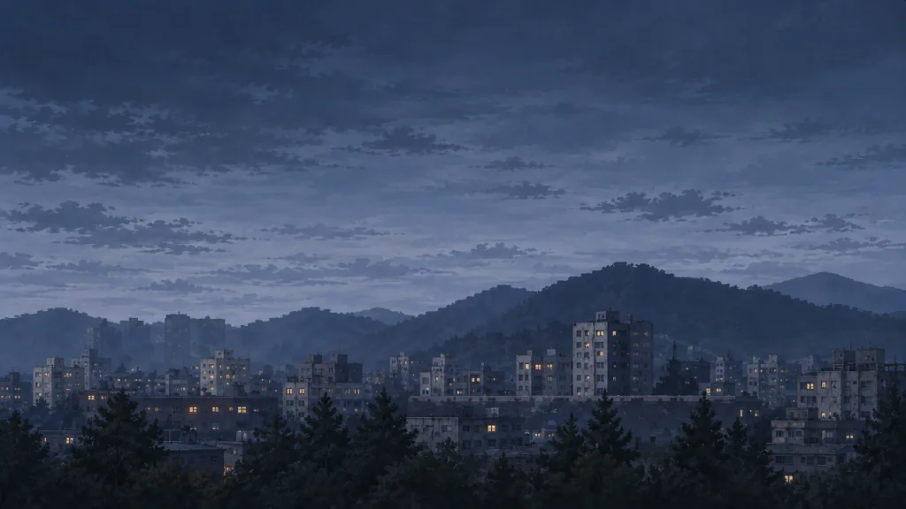

풍경은 그대로, 위험만 작게.
배치 시안 · 실제 플레이와 저장은 바뀌지 않아요.


추적 위험 012345/5 단계 설명 열기 또는 닫기
천리안의 추적 위험
현재 쌓인 관측 표식은 없어요. 이후 행동에 따라 위험이 오를 수 있어요.
달구지의 관측 표식이 남아 있어요. 수치가 높을수록 추적 사건을 만날 가능성이 커져요.
추적 사건을 만날 가능성이 커지고, 길 위에서 검문을 받을 위험도 생겨요.
검문 위험이 높아요. 관측 표식 때문에 마을에서 하룻밤 쉬는 것도 거절당해요.
지금 카메라가 보고 있다는 뜻은 아니에요.연료 42 L차체 70%맑음
목적지머물기
다음 목적지무주 터널
목적지 변경 ›38 km약 3시간
무주 터널로 출발
출발 버튼의 배치 예시예요.
이 초안에서는 이동하거나 시간을 보내지 않아요.
아빠와 엄마가 남긴 기록
다가오는 곳무주 터널13 km 남음
김천무주
주행 중에도 표시는 같은 자리에.
풍경에는 색이나 스캔선을 덧씌우지 않아요.
아빠와 엄마가 남긴 기록